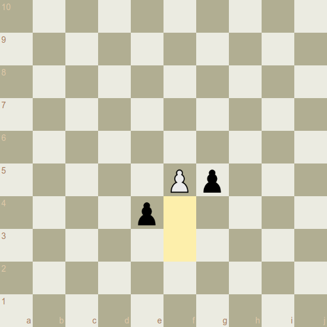

ChessXp
Classic Vibe. New Adventures.
Claim
What is described here, is not a chess variant. It's chess. The 10x10 version.
Summary
If you like Chess, but not necessarily its restriction to the default rnbqkbnr setup, this respectful innovation attempt might be what you are looking for. It describes a plausible set of rule adjustments that would make chess playable on a 10x10 board, while preserving the minimalist design concept of the original game.
First of all the raw specification for the impatient guys, followed by some notes regarding the concept.
Please check out chessxp.com for a software implementation.
Board
The board is extended to 100 (10x10) squares. The files are labeled with the letters a-j, the ranks with the numbers 1-10. The lower right square of the board is black.
Winger
One new piece is introduced. The winger is basically a "big knight" and the logical next twin piece after bishop, knight and rook. While the knight reaches all squares that are part of the second circle around a given square and cannot be reached by rook or bishop, the winger has the same ability for the third circle. It would control the following fields if placed on the f6 square:

Like the knight, the winger can "jump over" all other pieces (of either color) to its destination square.
The piece is complementary to bishop, knight and rook. Means, it covers only squares that are not covered by these pieces:

Each player starts with two wingers.
Pawns
The pawns are modified as follows:
They can move up to three steps forward when placed the initial square.
Up to two steps forward when placed on the third, fourth or fifth rank.
One step forward when placed on the sixth rank or higher.
This means a pawn can reach the promotion field within five moves, which is the same number of moves as in classical chess:

En passant capturing is possible each time a pawn passes an enemy pawn by moving more than one square forward in one move. The following example shows possible captures after the white pawn moved three squares forward:

Castling
The castling rules are the same as in classical chess. King moves two squares towards the rook, rook jumps over. Thus, after 0-0 the king and rook are located on h1 and g1, after 0-0-0 on d1 and e1.

Initial Setup
The piece arrangement before move one is as follows:

Notes
ChessXp incorporates the following design elements of classical chess:
- Two single pieces: The key piece and the strongest piece. The latter has the same move pattern as the key piece but with unlimited range.
- Three (four) pairs of twin pieces that are complementary to each other.
- Pieces with ambiguous routes to their destination squares (knight, winger) can move directly to these squares regardless if one or all routes are blocked.
- Pawns get slower once they pass a certain rank number.
- All pieces can be developed by moving only the two central pawns.
- No unprotected pawns in the initial position.
Upvaluing the pawns by making them faster seemed necessary to keep the dynamic spirit of the original game that includes fast confrontation and a broad spectrum of possibilities for piece sacrifices.
The winger might be about as valuable as a rook (my own estimation).
Idea
Uli Schwekendiek
I live in Berlin
contact@chessxp.com
2019-2021
Setup Variants
ChessXp features different kinds of start positions for a game.
Placement
In this mode, each player starts with eight pawns only, and the first eight moves are used to place the pieces behind them.
The following conditions must be met:
- The bishops must be placed on different square colors.
- The king must be placed between the rooks.
- As long as it's possible and the two conditions above are not violated, a piece can only be placed on a file where the opponent hasn't already placed a piece of the same type.
The castling rules are the same as in Chess960/Fischer-Random.
Castle
Razor sharp mode where the kings are always placed on the first and the last square of the board. The remaining white pieces are randomly placed on the first rank and mirrored for black in a point symmetric fashion.
No castling (obviously).
A winger can't make the first move.
For 8x8 you can watch lots of examples here.
Vintage
The default setup.